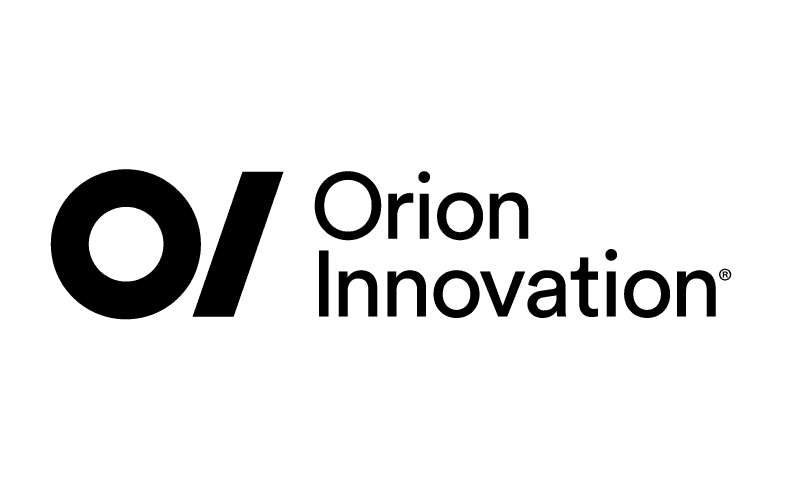

Marmara University
B.Sc. in Computer Engineering (3rd year)
October 2023 - PresentAbout
I'm a Computer Engineering student at Marmara University and an AI Engineering Intern at Orion Innovation, building LLM, vision-language, retrieval and speech systems. My foundation in Python, machine learning and model evaluation comes from industry work, the Google AI and Technology Academy and personal projects, and I enjoy turning models into reliable, measurable products.
01 // Milestones
B.Sc. in Computer Engineering (3rd year)
October 2023 - PresentGerman preparatory program and science-oriented high school education
September 2019 - June 2023AI Engineering Intern working on LLM, retrieval and speech systems
July 2026 - PresentCo-founder & CTO of a clothing-swap marketplace, responsible for the entire technical side in a team of 7
June 2026 - PresentAI Team Lead
January 2026 - PresentTrainee and startup founder; Giyiver received investment through the program
February 2026 - June 20268-month intensive data science program with datathon and bootcamp outcomes
December 2024 - August 202502 // Experience

Building LLM, retrieval and speech systems across three projects: SOSIS (Software product line Optimization for Safety-/mission-critical Industrial Systems, ITEA 4), an AI-driven test management platform; GENIUS (Generative AI for the Software Development Life Cycle), LLM-based requirement extraction; and CLEAR (Call Listener Emergency Audio Recognition), real-time audio intelligence for emergency call centers.

Turkish clothing-swap marketplace (barter, donation, points) live at giyiverr.com. Backed by investment received through Shell ILERIDE. We are a team of 7, and I am responsible for the entire technical side of the project: web, mobile, backend, infrastructure, AI, security and testing.


03 // Approach
Before writing code, I make sure the objective, success metrics, and constraints are clear.
I evaluate outcomes through accuracy, latency, scalability, and maintainability, not just one score.
In team projects, I care about shared ownership, clear communication, and hitting delivery milestones.
I improve through certifications, experimentation, and personal projects that test ideas in realistic conditions.
04 // International Profile
05 // Contact